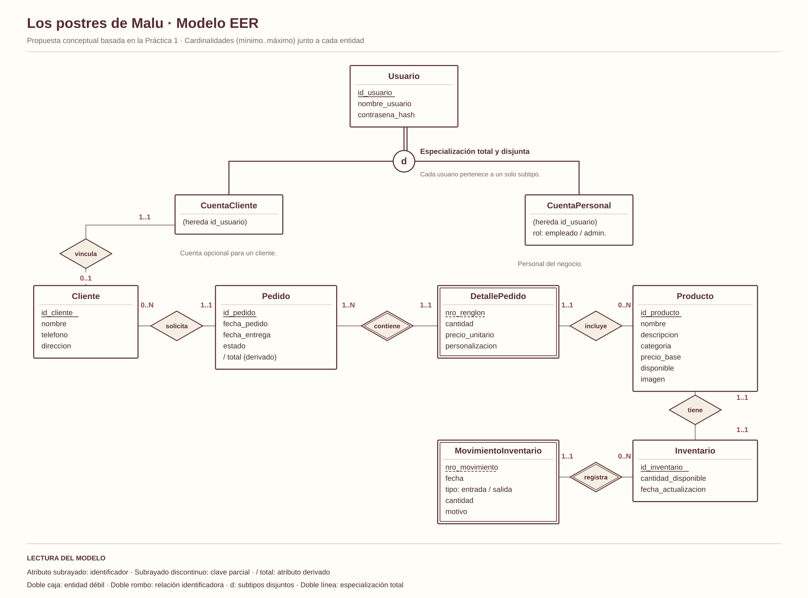
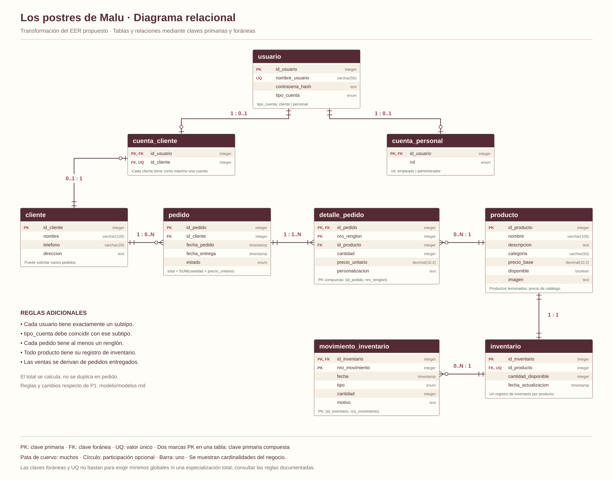

Ampliar imagenRepostería casera · Proyecto de digitalización
Los postres
de Malu.
Cada pedido merece
estar bien organizado.
Una propuesta para recibir solicitudes de pedidos y organizar la información de un negocio de repostería: clientes, productos, fechas e inventario.
Explorar el modelo de datosBases de Datos · IPN / ESCOM · Práctica 3.1
01 / El proyecto
Una necesidad real, un modelo claro.
De las libretas
a la información
organizada.
Problema que atiende
Recepción de solicitudes de pedidos para la digitalización de un negocio de repostería.
Actualmente, los pedidos llegan por WhatsApp y se registran en libretas. La información dispersa dificulta consultar fechas de entrega, precios, existencias e historial de clientes.
- Recepción
- Reunir los datos del cliente y los productos solicitados.
- Seguimiento
- Organizar fechas, cantidades y estados de cada pedido.
- Control
- Consultar productos terminados, existencias e historial.
Integrantes
02 / Modelo de datos
La estructura detrás de cada pedido.
Así se conecta
el negocio.
Clientes, cuentas, productos e inventario se relacionan con los pedidos y sus detalles. Las ventas se obtienen de los pedidos entregados.


Ampliar imagen
Modelos reconstruidos a partir del caso de la Práctica 1. La ampliación EER y su transformación relacional son una propuesta para cotejar con las prácticas 2 y 3.
Una regla importante: el precio de cada producto se conserva en el detalle del pedido, aunque el precio del catálogo cambie después.
03 / Repositorios
Código y continuidad del proyecto.
El trabajo,
en un solo lugar.
Repositorio del proyecto
Documentación, modelos y código de Los postres de Malu.
Enlace por configurarFork del proyecto asignado
Copia de trabajo de Data_Warehouse_static, asignado en la Práctica 2.
Enlace por configurarAntes de publicar, agrega las dos direcciones de GitHub en config.js.